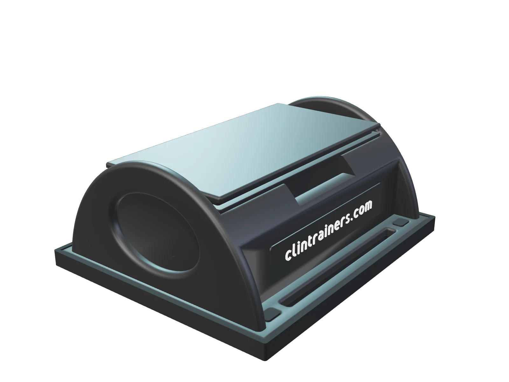
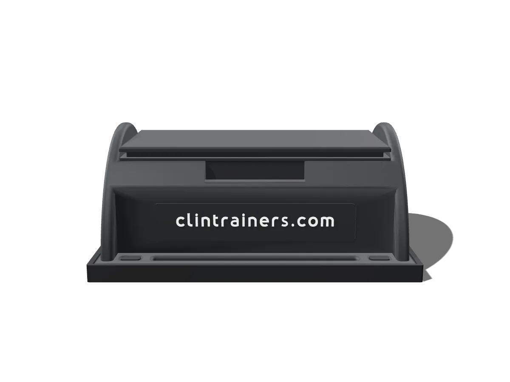
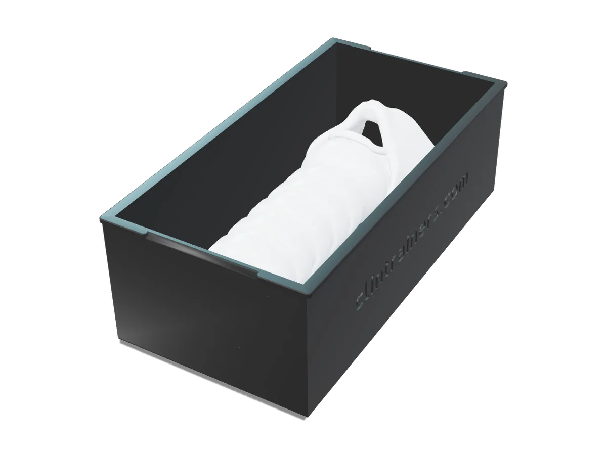
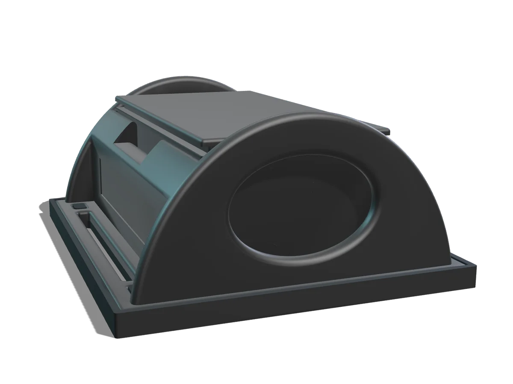
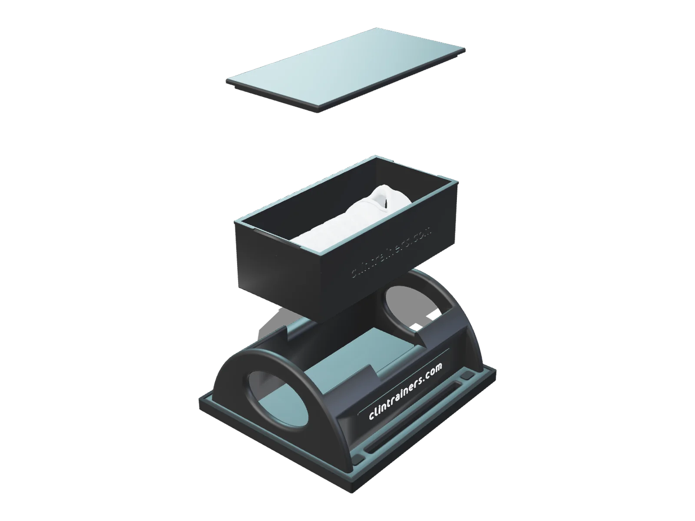

Anatomical landmarks
Palpable thyroid cartilage, cricoid cartilage, cricothyroid membrane and tracheal rings, set apart so cricothyrotomy and tracheostomy sites stay distinct.
PrototypeCricothyrotomy & tracheostomy task trainer
CT1 pairs a reusable base with drop-in procedure cartridges, so simulation programs can run realistic front-of-neck airway practice and reset quickly between learners.

Placeholder: not the actual productOverview
CT1 is simulation training equipment for skills labs, simulation centers and procedural training programs. Learners practice locating anatomy by touch and working through the anterior neck on a replaceable cartridge, while the base stays on the table session after session.

Features
Details reflect the current prototype. Items marked in italics are still being confirmed.
Palpable thyroid cartilage, cricoid cartilage, cricothyroid membrane and tracheal rings, set apart so cricothyrotomy and tracheostomy sites stay distinct.
PrototypeEach cartridge carries its own anatomy and tissue. After cutting procedures, swap in a fresh cartridge instead of rebuilding layers.
Silicone skin over a softer subcutaneous layer, with a one-piece flexible 3D-printed airway. Base and cartridge shells are 3D printed.
Prototype materialsNo power, pumps, tubing or tools. The cartridge seats in the base, and the rubber pad keeps the trainer steady on the table.
Fluids and cut tissue stay inside the cartridge, so the base stays clean and reusable. Cleaning and care instructions to be confirmed.
A sealed fluid layer under the skin for passive bleeding on incision, with no external reservoirs.
In developmentSimulation applications
The combined cartridge supports practice for both procedures. CT1 is a training aid; it does not replace an institution's curriculum or clinical guidelines.

Designed for repeated practice of cricothyrotomy skills in a controlled, simulated setting.

A separate tracheal ring region keeps tracheostomy practice distinct from the cricothyrotomy site.
Gallery
Renders of the CT1 prototype CAD model. Product photography will replace these once production units are available.

Cartridge cover Airway insert Cartridge Reusable base Nameplate Rubber padExploded view · CT1 components
Colors and finishes shown are illustrative.
Specifications
Dimensions are measured from the prototype CAD model and may change before production.
| Product type | Simulation task trainer for cricothyrotomy and tracheostomy practice |
|---|---|
| Configuration | Reusable base with drop-in procedure cartridge |
| Base footprint (with pad) | approx. 109 × 128 mm |
| Assembled height | approx. 55 mm |
| Cartridge | approx. 57 × 110 × 37 mm |
| Weight | To be confirmed |
| Base & cartridge shell | 3D-printed polymer (prototype) |
| Tissue | Silicone skin and subcutaneous layers (prototype) |
| Airway | One-piece flexible 3D-printed airway insert (prototype) |
| Power & fluids | None required; no external tubing |
| Cartridge life | Replace after cutting procedures; uses per cartridge to be confirmed |
| Cleaning | To be confirmed |
| Storage | To be confirmed |
| Intended use | Education and simulation training only. Not for clinical or diagnostic use. |
FAQ
Clinical educators, simulation centers, medical and nursing programs, EMS training programs and healthcare organizations that teach emergency airway skills.
No. CT1 is simulation training equipment for education only. It is not intended for clinical or diagnostic use.
Lift the used cartridge out of the base and drop a fresh one in. No tools, tubing or cleanup inside the base. How many practice attempts each cartridge supports is being confirmed.
No. There are no electronics, pumps or external fluid connections. Place the trainer on a flat surface and seat a cartridge.
Pricing is provided by quote. Request a demo or email us with your program details and we'll follow up.
Yes. Use "Request a Demo" and let us know your program and preferred timing.
Request a demo
Tell us about your program and we'll arrange a demonstration and follow up with a quote.